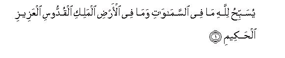
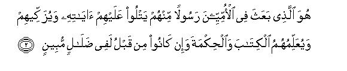
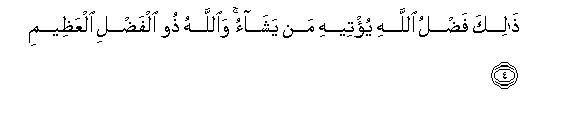
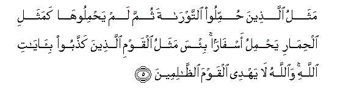
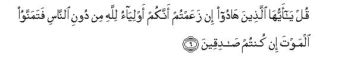
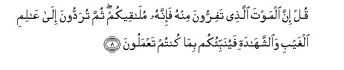
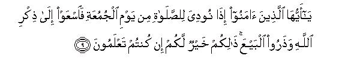
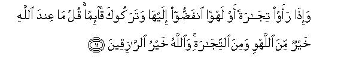

بسم الله الرحمن الرحيم
Sayyid Abul Ala Maududi - Tafhim al-Qur'an - The Meaning of the Qur'an
 62.
Surah Al Jumuah (The Friday Congregation)
62.
Surah Al Jumuah (The Friday Congregation)
It is derived from the sentence idha nudiya-lis-salat-imin-yaum-il- Jumu'ati of verse 9. Although in this Surah injunctions about the Friday congregational Prayer also have been given, yet "Jumu'ah" is not the title of its subject-matter as a whole, but this name too, like the names of other Surahs, is only a symbolic title.
The period of the revelation of the first section (vv. 1-8) is A. H. 7, and probably it was sent down, on the occasion of the conquest of Khaiber or soon after it. Bukhari, Muslim, Tirmidhi, Nasa'i and Ibn Jarir have related on the authority of Hadrat Abu Hurairah that he and other Companions were sitting in the Holy Prophet's assembly when these verses were revealed. About Abu Hurairah it is confirmed historically that he entered Islam after the truce of Hudaibiyah and before the conquest of Khaiber, and Khaiber was conquered, according to Ibn Hisham, in Muharram, and, according to Ibn Sa`d, in Jamadi al-Awwal, A.H. 7. Thus presumably Allah might have sent down these verses, addressing the Jews, when their last stronghold had fallen to the Muslims, or these might have been revealed when, seeing the fate of Khaiber, all the Jewish settlements of northern Hijaz had surrendered to the Islamic government.
The second section (vv. 9-11) was sent down shortly after the emigration, for the Holy Prophet (upon whom be Allah's peace) had established the Friday congregational Prayer on the 5th day after his arrival at Madinah. The incident that has been referred to in the last verse of this section must have occurred at a time when the people had not yet received full training in the etiquette of religious congregations.
As we have explained above, the two sections of this Surah were sent down in two different periods. That is why their themes as well as their audiences are different. Although there is a kind of harmony between them on account of which they have been put together in one Surah, yet we should understand their themes separately before we consider the question of their harmony.
The first section was sent down at a time when all Jewish efforts to obstruct the message of Islam during the past six years had failed. First. in Madinah as many as three of their powerful tribes had done whatever they could to frustrate the mission of the Holy Prophet, with the result that one of the tribes was completely exterminated and the other two were exiled. Then by intrigue and conspiracy they brought many of the Arab tribes together to advance on Madinah, but in the Battle of the Trench they were all repulsed. After this, Khaiber had become their stronghold, where a large number of the Jews expelled from Madinah also had taken refuge. At the time these verses were revealed, that too was taken without any extraordinary effort, and the Jews at their own request agreed to live there as tenants of the Muslims. After this final defeat the Jewish power in Arabia came to an end. Then, Wad-il-Qura, Fadak, Taima', Tabuk, all surrendered one after the other, so much so that all Arabian Jews became subdued to the same Islam which they were not prepared to tolerate before. This was the occasion when Allah Almighty once again addressed them in this Surah, and probably this was the last and final address that was directed to them in the Qur'an. In this they have been reminded of three things:
"You refused to believe in this Messenger only because he was born among a people whom you contemptuously call the "gentiles." You were under the false delusion that the Messenger must necessarily belong to your own community. You seemed to have been convinced that anyone who claimed to be a prophet from outside your community, must be an impostor, for this office had been reserved for your race, and a messenger could never be raised among the "gentiles." But among the same gentiles Allah has raised a Messenger who is reciting His Book in front of your very eyes, is purifying souls, and showing the Right Way to the people whose misdeeds are well known to you. This is Allah's bounty, which He may bestow on anyone He may please. You have no monopoly over it so that He may bestow it over whomever you may please and may withhold it from whomever you may desire it to be withheld".
"You had been made bearers of the Torah, but you did not understand your responsibility for it nor discharged it as you should have. You are like the donkey which is loaded with books, and which does not know what burden it is bearing. Rather you are worse than the donkey, for the donkey is devoid of sense, but you are intelligent. You not only shirk your responsibility of being bearers of Allah's revelations deliberately, Yet, you are under the delusion that you are Allah's favorites and the blessing of apostleship has been reserved for you alone. More than that, you seem to entertain the notion that whether you fulfill the demands of Allah's message or not, Allah In any case is bound not to make any other than you the bearer of His message."
"If you really were Allah's favorites and you were sure of having a p!ace of honor and high rank reserved with Him, you would not have feared death so much as to prefer a life of disgrace to death. It is only because of this fear of death that you have suffered humiliation after humiliation during the past few years. Your this condition is by itself a proof that you are fully conscious of your misdeeds, and your conscience is aware that if you die with these misdeeds, you will meet with a greater disgrace before Allah in the Hereafter than in this world."
This is the subject-matter of the first section. The second section that was sent down many years later, was appended to this Surah because in it Allah has bestowed Friday on the Muslims as against the Sabbath of the Jews, and Allah wanted to warn the Muslims not to treat their Friday as the Jews had treated their Sabbath. This section was sent down on an occasion when a trade caravan arrived in Madinah right at the time of the Friday congregational service and hearing its din and drum the audience, except for 12 men, left the Prophet's Mosque and rushed out to the caravan, although the Holy Prophet (upon whom be Allah's peace) at that time was delivering the Sermon. Thereupon it was enjoined that after the call is sounded for the Friday Prayer all trade and business and other occupations become forbidden. The believers should then suspend every kind of transaction and hasten to the remembrance of Allah. However, when the Prayer is over, they have the right to disperse in the land to resume their normal occupations. This section could be made an independent Surah in view of the commandments that it contains about the congregational service on Friday, and could also be included in some other Surah, but, instead, it has been included here particularly in the verses in which the Jews have been warned of the causes of their evil end. Its wisdom in our opinion is the same as we have explained above.

In the name of Allah, the Compassionate, the Merciful.

[1] Whatever is in the heavens and whatever is in the earth glorifies Allah-the Sovereign, the Holy, the All-Mighty and the All-Wise!1


[2-4] He it is Who has raised a Messenger among the gentiles2 from among themselves, who recites to them His Revelations, purifies them and teaches them the Book and the Wisdom,3 whereas before this they were indeed lost in manifest error.4 And (the advent or the Messenger) is also for those others who have not yet joined them.5 Allah is All-Mighty, All-Wise.6 This is Allah's bounty; He bestows it on whomever He wills, and Allah is the Owner of supreme bounty.

[5] The example of those who were entrusted with the burden of the Torah, and yet they failed to bear its burden,7 is of a donkey8 laden with books. Even worse is the example of those who have treated Allah's Revelations as false.9 Allah does not guide such wrongdoers.


[6-8] Say to them, "O you who have become Jews.10 If you claim that you alone are Allah's favorites,11 apart from all other people, then you should Song for death if you be truthful.12 But they will never wish for it because of the misdeeds they have committed,13 and Allah knows full well these wrongdoers. Say to them, "The death from which you flee will certainly overtake you. Then you will be presented before Him, Who is the Knower of the hidden and the open, and He will tell you what you had been doing."

[9-10] O you who have believed, when the call is made to the Prayer on Friday,14 hasten to the remembrance of Allah and leave off your trading.15 This is better for you only if you knew. Then, when the Prayer is over, disperse in the land and seek Allah's bounty,16 and remember Allah much.17 Perhaps you may achieve success.18

[11] And when they saw some merchandise and sport they broke off to it and left you standing.19 Say to them, "That which is with Allah is far better than sport and business,20 and Allah is the best of all providers."21
1For explanation, sec E.N.'s 1, 2 of Surah AI-Hadid, and E.N.'s 36, 37, 41 of Surah AI-Hashr above. This introduction bears a deep relevance to the theme that follows. In spite of the fact that the Jews of Arabia were witnessing clear signs of Prophethood in the person of the Holy Prophet (upon whom be Allah's peace) and his high character and works and in spite of the clear good news given by the Prophet Moses (peace be upon him) in the Torah, which only applied to him, they were denying him only because they did not want to acknowledge the prophet hood of a person who did not belong to their own community and race. They openly proclaimed that they would believe only in that which had come to them, and would not accept any teaching, which came through a non-Israelite prophet, even if it was from God. For this attitude in the following verses they have been reproved. Hence the reason for beginning the discourse with the introductory sentence. First, it says that everything in the universe is glorifying Allah; that is, the entire universe testifies that Allah is free from all those faults and weaknesses because of which the Jews have formed the concept of their racial superiority. He is not related to anyone: He has nothing to do with favoritism: He treats all His creatures with equal justice, mercy and care. No particular race and nation is His favorite so that He may be bound to bless it whatever it may do; and He is not prejudiced against any race or nation so that He may deprive it of His bounties even if it possesses all the good qualities. Then, it says that He is the Sovereign; that is, no worldly power can restrict His authority and powers, as if to say: "You, O Jews, are His servants and subjects. 'It is not for you to decide whom He should appoint His Messenger, and whom He should not, for your guidance. " Then it says that He is Holy; that is, HE is far exalted and glorified that His judgments may be mistaken. Human judgments may have mistakes but His decrees are perfect. In the end, two more attributes of Allah have been mentioned: that He is All-Mighty, i.e. none can fight Him and win and that He is All-Wist, i.e. whatever He does, it is always the very demand of wisdom, and His plans and designs are so well-planned that none in the world can hinder and frustrate them.
2Here the word ummi (gentile) has been used as a Jewish term and there is a subtlety in it. The verse means: "The All-Mighty and All-Wise Allah has raised a Messenger among the Arabs whom the Jews contemptuously consider the gentiles and much below themselves, The Messenger has not risen of his own wish and will, but has been raised by Him Who is the Sovereign of the universe, Who is All-Mighty and All-Wise, Whose power can be resisted and opposed only to one's own loss and peril.
One should know that the word ummi has occurred in the Qur'an at several places but in different meanings at different places. At one place it has been used for the people who do not possess any revealed scripture, which they may he following, as AI-'Imran: 20, where it 'has been said: "Ask those who possess the Book and those who do not possess (umnris); 'Have you accepted Islam`''" Here, the ummis imply the Arab polytheists, and they have been regarded as a separate class from the followers of the Book, i.e. the Jews and the Christians. At another place, it has been used for the illiterate people among the Jews and Christians, who are ignorant of the Book of Allah, as in Al-Baqarah: 78: "Among the Jews there are some illiterate people (ummis) who have no knowledge of the Book but are guided by mere conjecture and guess-work. " At still another place, this word has been used purely as a Jewish term, which implies all the non-Jewish people, as in Al-'Imran: 75: (The actual cause of this dishonesty of theirs is that they say:) We are not to be called to account for out behavior towards the non-Jews (ummis) This third meaning of ummi is implied in the verse tinder discussion. It is a synonym of the Hebrew word goyim, which has been translated gentiles in the English Bible and implies all the non-Jewish or the non-Israelite people of the world.
But the real significance of this Jewish term cannot be understood only by this explanation of it. The Hebrew word goyim originally was used only in the meaning of a nation, but gradually the Jews reserved it first for the nation other then themselves, then they gave it the special meaning that all the nations other than the Jews were un-civilized, irreligious, unclean and contemptible; so much so that in its connotations of hatred and contempt this word even surpassed the Greek term 'barbarian' which they used for all the non-Greeks. In rabbinical literature, goyim are such contemptible people, who cannot be considered human, who cannot be made companions in a journey, who cannot be saved even if one of them is drowning. The Jews believed that the Messiah of the future would destroy all the goyim and burn them to annihilation. (For further explanation, see E.N. 64 of Al-'Imran).
3These characteristics of the Holy Prophet (upon whom be piece) have been mentioned at four places in the Qur'an and everywhere with a different object. These have been mentioned in AI-Baqarah: t29 to tell the Arabs that the mission of the Prophet, which they were regarding as a calamity and affliction for themselves, was indeed a great blessing for which the Prophets Abraham and Ishmael (peace be upon them) had been praying for their children. In Al-Baqarah: 151 these have been mentioned to exhort the Muslims to recognize the true worth of the Holy Prophet and to derive full benefit from the blessing which they had been granted in the form of his Apostleship. These have been reiterated in AI 'Imran: 164 to make the hypocrites and the people of weak faith realize what great favor Allah had done them by raising His Messenger among them, and how foolish they were in not appreciating this. Now, here in this Surah these have been repeated for the fourth time with the object to tell the Jews: 'The mission that Muhammad (upon whom be Allah's peace and blessing) is performing in front of you, is evidently the mission of a Messenger. He is reciting the Revelations of Allah, the language, themes and style of which testify that these arc indeed Divine Revelations. He is purifying and reforming the lives of the people, cleansing their morals and habits And dealings of every evil element, and adorning them with the finest moral qualities. This is the same task which all the Prophets before him have been performing. Then he does not rest content only with the recitation of the Revelations, but he is making the people understand the real aim of the Divine Book by word and deed and by the practical model of his life and imparting to them the wisdom and knowledge which none but the Prophets have imparted so far. This very character and way of life and practical model is the conspicuous characteristic of the Prophets by which they are recognized. Then how stubborn you arc that you refuse to recognize and believe in the Messenger whose truth is manifestly proved by his wonderful works only because Allah has not raised him among you but among the people whom you call the ummis (gentiles).
4This is another proof of the Holy Prophet's Prophethood, which has been presented to open eyes of the Jews. These people had been living in Arabia for centuries and no aspect of the religious, moral, social and cultural life of the Arabs was hidden from them. Referring to the state of their previous life it is being said: "You are an eye-witness of the revolution that has taken place in the lift of this nation within a few years under the guidance and leadership of Muhammad (upon whom be Allah's peace and blessings). You arc fully aware of the condition in which these people were involved before embracing Islam: you arc also aware of their transformation afterwards, and you arc also witnessing the condition of those people of this very nation, who have not yet embraced Islam, Is the clear and manifest difference which even a blind man can perceive not enough to convince you that this revolution can be brought about by none but a Prophet?”
5That is, the Prophethood of Muhammad (upon whom be Allah's peace and blessings) is not restricted only to the Arabs but is meant for other nations and races as well, who have not yet joined the believers, but are going to be born till the Last Day. The word minhum (of them) in the original can have two meanings:
(1) "That those other people will be of the ummis i.e. the non-Isaelite nations of the world;" and
(2) "that they will be believers in Muhammad (upon whom be Allah s peace and blessings), though they have not yet joined the believers, but will join them later on. " Thus, this verse is one of those verses which explicitly state that the Message of the Holy Prophet (upon whom be peace) is meant for all mankind for ever. The other places where this theme has o occurred in the Qur'an are: AI-'Imran: 19, Al-A'raf: 158, Al-Anbiya': 107, AI-Furqan: 1, Saba 28. (For further explanation, see EN 47 of Surah Saba).
6That is, it is a manifestation of Allah's own power and wisdom that among an un-civilized, , un-lettered people He has raised a great Prophet, whose teachings arc so revolutionary and contain such eternal and universal principles as can provide a sound basis for the whole of mankind to be a single unified community, which can obtain guidance from those principles for ever. An impostor, however hard he may have tried, could not have attained this position and rank. Not to speak of a backward people like the Arabs; even the most intelligent and talented man of the most advanced nation of the world cannot have the power that he may revolutionist a nation so completely, and then give such comprehensive principles to the world that all mankind may follow it as one community and be able to run a universal and all-pervasive system of one way of life and one civilization for ever. This is a miracle which has taken place only by Allah's power, and only Allah on the basis of His wisdom has chosen the person, the country and the nation for it.
7This sentence has two meanings, a general meaning and a special meaning. The general meaning is that the people who were entrusted with the knowledge and practice of the Torah and with the responsibility of guiding the world according to it, neither understood this responsibility nor discharged it as they should have. The special meaning is Being the bearers of the Torah these people should have been fore-most to join hands with the Messenger, good news about whose advent had been already given in the Torah, but, instead, they have been in the forefront to oppose him and have thus failed to fulfill the demand of the teaching of the Torah.
8That is, just as a donkey loaded with books does not know what it is loaded with, so are these people loaded with the Torah and they do not know what this Book was sent for and what are its demands.
9That is, they are even worst than a donkey, who is without sense and therefore excusable. But these people have intelligence they read and teach the Torah and are fully aware of its meaning Yet they are turning away from its guidance and refusing willfully to acknowledge and believe in the Prophet who even according to the Torah teaches the truth. They are guilty not because of ignorance but because of denying Allah's Revelation deliberately.
10This point is noteworthy. It has not been said: "O Jews". but "O you who have became Jews, or who have adopted Judaism", the reason being that the way of life brought by the Prophet Moses (peace be on him) and the Prophets after and before him, was Islam itself. None of those Prophets was a Jew, nor bad Judaism been born in their time, but Judaism as such came into being much later. It is ascribed to the tribe which descended from Judah, the fourth son of the Prophet Jacob (peace be upon him). When after the Prophet Solomon (peace be upon him) his kingdom broke into two parts, this tribe became ruler over the state which came to be known as Judea. The other tribes of the Israelites established their separate state which became famous as Samaria. Then Assyria not only destroyed Samaria but also wiped out those Israelite tribes which had founded that state. After that only the decedents of Judah besides those of Benjamin remained. Who because of the predominance of the descendants of Judah, began to be called the "Jews". Judaism is the name of the framework of the doctrines, customs, and religious rules and regulations which the priests, rabbis and learned men of this race prepared according to their own ideas, theories and trends for many centuries. This framework started being shaped in the 4th century B.C. and continued to develop till the 5th century A.D. It contains a very small element of the Divine guidance brought by the Messengers of Allah, and even that element has been corrupted That is why at many places in the Qur'an they have been addressed as alladhina hadu "O you who have become Jews". All of these were not the Israelites but there were among them also converts who had embraced Judaism. .Whenever in the Qur'an the children of Israel have been addressed, the words are: "O children of Israel", and where the followers of Judaism have been addressed, the words are; alladhina hadu "O you who have become Jews" .
11At several places in the Qur'an their claim has been described in detail, as in Al Baqarah: 111: "They say: none shall enter Paradise unless he be a Jew', in AI-Baqarah: 80: "The fire of Hell is not going to touch us, and even if it does at all, it will be only for a few days', and in Al-Ma'idah: 18: "We are the sons of Allah and His beloved ones." Sane such claims are also found in the books of the Jews themselves The world at least knows that they regard themselves as the chosen people of God, and cherish the false notion that Cod has a special relationship with them, which is not shared by any other human group or class.
12This has been stated for the second time in the Qur'an, addressing the Jews First, in Al-Baqarah: 94-96, it was said: "Say to them: If the abode of the Hereafter with Allah is exclusively reserved for you and Trot for the rest of mankind, then you should long for death, if you are sincere in your claim. Believe it that they will never wish for it, for (they arc fully aware of) what they have sent before them for the Hereafter. And Allah knows well the mentality of the transgressors. You will find that of all mankind, they are the greediest for life; any they are even greedier than the idolaters. Each one of them longs to have a life of a thousand years, but a long life can by no means remove them away from the Doom, for Allah is watching whatever they are doing." Now the same thing has been repeated here. But this is not a mere repetition. In the verses of Al-Baqarah, it was said when no war had yet take place between the Muslims and the Jews. In this Surah it was reiterated at the time when after several battles their power in Arabia had been finally and absolutely, crushed. These battles and their results proved by experience and observation that what had been said in AI-Baqarah was correct. In Madinah and Khaiber the Jewish strength was much superior to that of the Muslims both in numbers and in resources. Then they had the pagans of Arabia and the hypocrites of Madinah also as their allies who were bent upon wiping out the Muslims. But in spite of this great disparity in numbers the Muslims overwhelmed the Jews mainly because they were least afraid of dying for the cause of Allah; they were rather fond of it, and would enter the battlefield fully prepared to embrace death. For they believed that they were fighting in the way of God and had complete faith that the one who fell martyr in His way would be blessed with Paradise. Contrary to this, the Jews were not prepared to fight and lay down their life for any cause, neither the cause of God, nor the cause of their nation nor for their own self, properties and honor. They only loved to live, in whatever way or fashion it be. This had made them cowardly.
13In other words, their Right from death is not without a reason. Whatever they may say, their consciences arc fully aware of how they are behaving towards Allah and His Religion and what consequences can he expected of the misdeeds they arc committing in the world. That is why-they were afraid to appear at the Court of God."
14Three things in this sentence are particularly noteworthy:
(1) That it contains mention of the call to the Prayer;
(2) that the mention is of the call to such a Prayer as has to be performed particularly only on Fridays; and
(3) that these things have not been mentioned so as to suggest that the call is to be made for the Prayer and a particular Prayer is to be performed on Friday, but the style and context clearly show that the call to the Prayer and the particular Prayer were both already being performed and practiced on Friday.
The people, however were being negligent in that on hearing the call to the Prayer they would not hasten to it but would remain occupied in their worldly activities and trade and business transactions. Therefore, Allah sent down this verse to make the people realize and appreciate the importance of the call and the Prayer and to exhort them to hasten to perform it as a duty. If these three things are considered deeply, they prove this truth absolutely that Allah conjoined on the Holy Prophet (upon whom be peace) certain Commands which were not revealed in the Qur'an, and these Commands too wen as obligatory as those revealed in the (Qur'an itself. The call to the Prayer is the same adhan which is being called the world over five times daily in every mosque. But neither its words have been stated anywhere in the Qur'an nor the method of calling the people to the Prayer has been taught. Its method was prescribed by the Holy Prophet (upon whom be peace). The Qur'an has only confirmed it twice, here and in AI-Ma'idah: 58. Like wise, this particular Prayer of Friday, which the Muslims of the whole world are performing today has neither been enjoined in the Qur'an nor its time and method of performance described anywhere. This me hod too was prescribed by' the Holy Prophet (upon whom be peace), and this verse of the Qur'an was sent down only to stress its importance and obligatory nature. In spite of this express argument anyone who claims that the Shari ah commandments are only those which have been stated in the Qur'an, is not in fact a denier of the Sunnah but of the Qur'an itself.
Before proceeding further, Iet us understand a few other things also about Jumu-uh (the Friday congregational Prayer):
(1) Jumu'ah is an Islamic term. In the pre-Islamic days of ignorance the Arabs called it the 'Arabah Day. In Islam when it was declared as a congregational day of the Muslims, it was re-named Jumu ah. Although according to the historians, Ka`b bin Luayy, or Qusayy bin Kilab, also had used this name for this day, for he used to hold an assembly of Quraish on this day (Fath-al-Bati), yet by this practice the ancient name did not change, and the common Arabs continued to call it the 'Arabah Day. The real change took place when Islam gave it this new name.
(2) Before Islam, setting aside of a day in the week for worship and regarding it as an emblem of the community was prevalent among the followers of the earlier scriptures. Among the Jews the Sabbath (Saturday) had been fixed for this purpose, because on this day Allah had delivered the children of Israel from the bondage of the Pharaoh. In order to distinguish themselves from the Jews the Christians took Sunday as their distinctive emblem. Although it had neither been enjoined by the Prophet Jesus nor mentioned anywhere in the Gospel, yet the Christians believe that after his death on the Cross the Prophet Jesus had risen from the grave on this day and ascended to heaven. On this very basis the later Christians ordained it as the day of worship, and then in 321 A.D. the Roman Empire instituted it as a holiday by decree. In order to distinguish its community from both these communities, Islam adopted Friday as the day of collective worship as against Saturday and Sunday.
(3) It is known from the tradition reported by Hadrat 'Abdullah bin Mas'ud and Hadrat Abu Mas'ud Ansari that the Friday congregational Prayer had been enjoined on the Holy Prophet (upon whom be-peace some time) before the Hijrah in Makkah itself. But at that time he could not act on it, for in Makkah it was not possible to perform any worship collectively. Therefore, he sent a written instruction to the people who had emigrated to Madinah before him that they should establish the Friday congregational Prayer there. Thus, Hadrat Mus`ab bin `Umair, the leader of the earliest emigrants, offered the first Friday Prayer at Madinah with 12 followers. (Tabarani, Daraqutni). Hadrat Ka`b bin Malik and Ibn Sirin have reported that even before this the Muslims of Madinah had decided mutually, on their own initiative, that they would hold a collective service on one day in the week. For this purpose they had selected Friday as against the Sabbath of the Jews and Sunday of the Christians, and the first Friday Prayer was led by Hadrat Asad bin Zurarah at the place of Bani Bayadah and 40 Muslims participated in it. (Musnad Ahmad Abu Da'ud, Ibn Majah, Ibn Hibban, `Abd bin Humaid, 'Abdur Razzaq, Baihaqi). This shows that the Islamic taste and trend at that time was itself demanding that there should be a day on which maximum number of Muslims should gather together and worship collectively. And this also was a demand of the Islam itself that it should be a day other than Saturday and Sunday so that the symbol of the Muslim community should be distinctive from the emblems of the Jewish and the Christian communities. This was a wonderful manifestation of the Islamic trends and tastes of the Holy Prophet's Companions that many a time it so happened that even before a thing was enjoined their taste proclaimed that the spirit of Islam demanded its introduction.
(4) The establishment of the Friday congregational Prayer was one of the earliest things that the Holy Prophet (upon whom be peace) did after his emigration to Madinah. After leaving Makkah he reached Quba' on Monday and stayed there for four days. On the fifth day, which was a Friday, he preceded to Madinah. On the way at the place of Bani Salim bin `Auf tim came for the Friday Prayer and he performed the first Friday congregational Prayer at this very place. (Ibn Hisham).
(5) The time appointed by the Holy Prophet (upon whom be Allah's peace) for this Prayer was after the declining of the sun, the same time which is for the Zuhr Prayer. The written instruction that he had sent to Hadrat Mus'ab bin `Umair before the hijrah was: "Seek nearness to Allah by means of two rakahs of the Prayer when the sun declines after midday on Friday. " (Daraqutni). This same instruction he gave orally after hijrah as well as practically led the Friday Prayer at the same time. Traditions on this Subject have been related on the authority of Hadrat Anas, Hadrat Salamah bin Akwa', Hadrat Zubair bin al-`Awwam, Hadrat Sahl bin Sa'd, Hadrat `Abdullah bin Mas`ud, Hadrat `Ammar bin Yasr and Hadrat Bilal in the collection of Hadith, saying that the Holy Prophet used to perform the Friday Prayer after the declining of the sun: (Musnad Ahmad Bukhari, Muslim, Abu Da'ud, Nasa'i, Tirmidhi).
(6) This also is confirmed by his practice that on this day the Holy Prophet led the Friday congregational Prayer instead of the Zuhr Prayer, and this Prayer consisted of two rak ahs and he gave the Sermon before it. This was the only difference between the Friday Prayer and the Zuhr Prayer on other days. Hadrat `Umar says: "According to the command enjoined by the tongue of your Prophet (upon whom be Allah's peace) the traveler's Prayer consists of two rak ahs, the Fajr Prayer consists of two rakahs, and the Friday Prayer consists of two rak ahs. This is the complete, not the shortened, Prayer, and the Friday Prayer has been shortened only because of the Sermon."
(7) The call to the Prayer that has been mentioned here, implies the call that is made just before the Sermon. and not the call that is made much before the Sermon to announce that the prayer time has begun. There is a tradition in the Hadith from Hadrat Sa'ib bin Yazid to the effect that in the time of the Holy Prophet there used to be only one call that was made after the Imam (leader in Prayer) had taken his seat on the pulpit. The same practice also continued in the time of Hadrat Abu Bakr and Hadrat 'Umar. When population increased in the time of Hadrat 'Uthman, he ordered another call to be made in the bazaar of Madinah at his house, Az-Zaura'. (Bukhari, Abu Da'ud, Nasa'i, Tabarani).
15In this Command "remembrance" implies the Friday Sermon, for the first thing that the Holy Prophet (upon whom be peace) used to do after the call was to deliver the Sermon, and the Prayer he led always after delivering the sermon Hadrat Abu Hurairah has reported that the Holy Prophet (upon whom be peace) said: "The angels on Friday go on writing down the names of the people as they arrive. Then, when the Imam comes out to deliver the Sermon, they stop writing the names and turn their attention to the remembrance (i.e. the Sermon)," (Musnad Ahmad, Bukhari, Muslim, Abu Da'ud, Tirmidhi, Nasa'i). This Hadith also shows that the remembrance implies the Sermon. The exhortation of the Qur'an itself points to the same thing. First, it says: "Hasten to the remembrance of Allah"; then a little below it says: "Then, when the Prayer is over, disperse in the land. " This shows that on Friday the order of the service is that first there is the remembrance of Allah and then the Prayer. The commentators are also agreed that remembrance either implies the Sermon, or the Sermon and the Prayer both.
Using the word "dhikr-Allah " for the Sermon by itself gives the meaning chat it should contain themes relevant to the remembrance of Allah; for instance, praising and glorifying .Allah, imploring Him to bless His Messenger, exhorting and instructing the audience to obey His Commands and follow His Shari Ah, commending His pious and righteous servants, etc. On this very basis, Zamakhshari writes in al-kashshaf 'Praising the wicked and tyrannical rules in the Friday Sermon, or mentioning their names and praying for them, has nothing to do with the remembrance of Allah; this would be the remembrance of Satan.
Hasten to the remembrance of Allah" does not mean that one should come to the mosque running, but it means that one should make haste for it. The commentators are also agreed on this very meaning. "Hastening" according to them means that on hearing the call one should immediately start making. preparations to attend the mosque. The Hadith even forbids coming to the mosque for the Prayer muting. Hadrat Abu Hurairah has reported that the Holy Prophet (upon whom be Allah's peace) said: "When the Prayer has begun, one should conic walking to it with calm and dignity, and not running. Then, one should join in whatever remains of the Prayer, and should make up whatever one has missed independently later. " (Sihah; Sittah Hadrat Abu Qatadah Ansari says: "Once we were offering the Prayer under the leadership of the Holy Prophet when suddenly we heard some people coming to join the Prayer running. When the Prayer was concluded, the Holy Prophet asked: What was the noise about? They replied; We came running for the Prayer. The Holy Prophet said; Don't do that: whenever you come for the Prayer, come with calm and dignity. Join behind the Imam in whatever remains of the Prayer, and make up whatever you have missed independently." (Bukhari, Muslim) 'Leave off your trading" also includes every other worldly activity and business which prevent one from getting ready for the Prayer with full attention and care. "Buying and selling" has been particularly forbidden, for commerce flourished on Fridays. People from the surrounding areas gathered together at a central place, the merchants also arrived with their merchandise, and the people became occupied in buying the necessities of daily use The prohibition however is not restricted only to buying and selling, but it applies to all other occupations as well. And since Allah has forbidden these, jurists of Islam are agreed that after the call has been sounded for the Friday Prayer all forms of trade, business and worldly occupation become forbidden.
This Command absolutely confirms the obligatory nature of the Friday Prayer. In the first place, the exhortation to hasten for it after one has heard the call, is by itself a proof of its being obligatory. Then, the prohibition of a lawful thing like trade and business at the time of the Prayer also shows that it is obligatory in nature Moreover, the elimination of the obligatory Zuhr Prayer on Friday and its being replaced by the Friday Prayer, is a clear proof that it is obligatory in nature. For an obligatory duty becomes eliminated only when the duty replacing it is more important. This very thing has been supported in many Hadiths, in which the Holy Prophet (upon whom be Allah's peace) exhorted the Muslims in most emphatic words to attend the Friday Prayer and has declared it in clear words to be obligatory. Hadrat 'Abdullah bin Mas'ud has reported that the Holy Prophet said: 'I feel I should ask somebody to stand in my place to Iced the Prayer, and I myself should go and set fire to the houses of the people who do not come for the Prayer. " (Musnad Ahmad, Bukhari). Hadrat Abu Hurairah, Hadrat 'Abdullah bin 'Abbas and Hadrat 'Abdullah bin 'Umar say: "We heard the Holy Prophet say this ' in the Friday Sermon, The people should refrain from giving up the Friday Prayer; otherwise Allah will seal up hearts and they will become totally heedless." (Musnad Ahmad, Muslim, Nasa'i). From the traditions reported by Hadrat Abu al-Ja'd Damri, Hadrat Jabir bin 'Abdullah and Hadrat 'Abdullah bin Abi Aufa from the Holy Prophet one comes to know that Allah seals ½p the heart of the person who abandons three Friday Prayers, one after the other, without a genuine reason and lawful excuse. Rather in one tradition the words arc to the effect: "Allah turns the heart of such a one into the heart of a hypocrite." (Musnad Ahmad, Abu Da'ud, Nasa`i, Tirmidhi Ibn Majah Darimi, Hakim, Ibn Hibban, Bazzar, Tabarani in al-Kabir. Hadrat Jabir bin 'Abdullah says that the Holy Prophet said: "From today till Resurrection the Friday Prayer is obligatory on you. Allah will neither bless nor set right the condition of the one who abandons it disregarding it or considering it an ordinary thing. Note it well: the Prayer of such a one will be no, prayer at all, his zakat will be no zakat at all, his Hajj no Hajj, his fasting no fasting, and no good done by him will be good, until he repents. Then, for the one who repents, Allah is Most Forgiving." (Ibn Majah, Bazzar). Another tradition, which is very close in meaning to this, has been cited by Tabarani in Auset from Ibn 'Umar, Furthemore there arc many traditions in which the Holy Prophet has declared the Friday Prayer as obligatory in clear words. Hadrat 'Abdullah bin 'Amr bin al-'As has related that the Holy Prophet said: 'The Friday Prayer is obligatory on every person who hears the call to it." (Abu Da'ud Daraqutni). Jabir bin 'Abdullah and Abu Sa'id Khudri say that he said in a Sermon: "Know that Allah has enjoined the Friday Prayer as a duty on you (Baihaqi). However, He has exempted the women, children, slaves, the sick and the travellers from this duty. Hadrat Hafsah has reported that the Holy Prophet said: "Attendance at the Friday Prayer is obligatory on every adult male." (Nasa'i). Hadrat Tariq bin Shihab's tradition contains this saying of the Holy Prophet: "The Friday congregational Prayer is obligatory on every Muslim except the slave, women, children and the sick." (Abu Da'ud, Hakim). In the tradition of Hadrat Jabir bin 'Abdullah, his words are to the effect: "Friday Prayer is obligatory on the person who believes in Allah and the Last Day unless it is a woman, or a traveler, or a slave, or a sick man." (Daraqutni, Baihaqi). On account of these very exhortations of the Qur'an and the Hadith. the entire Ummah is agreed that the Friday congregational Prayer is of obligatory nature.
16"This does not mean that after the Friday is over, it is obligatory to go in search of livelihood. but it only implies permission. As it was ordered to stop all worldly business as soon as the call was made for the Prayer, so it is allowed that after the Prayer is over, the people may dispose and resume or pursue whatever occupation or business they may like. It is just like the prohibition of hunting in the state of ihram, but after ihram is put off, one is told to hunt. (AI-Ma'idah: 2). That does not mean that one must hunt, but that one may hunt if one so likes. Or, for instance. in Surah An-Nisa', permission to marry more than one wife has been given, saying: "Marry two or three or four women whom you 'choose. " Here, although the verb is in the imperative mood, no one has taken it in the meaning of a command This gives the principle that the imperative form of the verb does not always imply an obligation or command it sometimes implies the permission and sometimes exercise of choice or preference. The context determines where it implies the command, where the permission and where Allah's approval of the act, and not that the act is obligatory. Immediately after this very sentence itself, it has been said: "And remember Allah much. " Here also the verb is in the imperative mood, but obviously it implies exercise of one's choice and not that it is a duty or compulsion.
Here, another thing worthy of mention is that although in the Qur'an Friday has not been declared a public holiday like the Jewish Sabbath and the Christian Sunday, yet no one can deny that Friday is a symbol of the Muslim community precisely in the same way as Saturday is a Jewish and Sunday a Christian symbol. And if declaring a day in the week a public holiday be a cultural necessity, then just as the Jews naturally select Saturday for it and the Christians Sunday, so a Muslim (if he has any Islamic feeling) will necessarily select only Friday for this purpose. The Christians did not even hesitate to impose their Sunday on some other countries where Christian population was negligible. When the Jews established their state in Palestine, the first thing they did was to announce Saturday as the weekly holiday instead of Sunday. In prepartitioned India one conspicuous distinction between British India and the Muslim states was that in one part of the country Sunday was observed as a closed holiday and in the other Friday. However, where the Muslims lack Islamic values, they hold to Sunday even after attaining to sovereign power as we see in Pakistan. In case of excessive westernization Friday is replaced by Sunday as the weekly holiday as was done by Mustafa Kamal in Turkey.
17"Remember Allah much": "Do not forget Allah even when you are otherwise occupied; but remember Him under all circumstances and remain conscious of Him at ail times." (For explanation, see E.N. 63 of Surah Al-Ahzab)
18At several places in the Qur'an, after giving an-instruction or an admonition, or a command words to the effect: perhaps, you achieve success" or 'perhaps you may be shown mercy" have been used. The use of 'perhaps" on such occasions does not mean that Allah, God forbid, is entertaining a doubt, but it is in fact a royal style of address. It is just like a kindly master's giving out hope to his servants to continue doing their best so that they may achieve and win the desired goal and reward, It contains a subtle promise which fills the servant with hope and he carries out his duties and obligations with enthusiasm.
As the Commands pertaining to the Friday congregational prayer come to an end here, it would be useful to give a resume of the injunctions that the four schools of juristic thought have derived from the Qur'an, the Hadih, traditions of the Companions of the Holy Prophet and the general principles of Islam.
According to the Hanafi school of thought, the time for the Friday Prayer is the same as for Zuhr Prayer. The Friday Prayer can neither be held before it nor after it. Business and trade become forbidden with the first call to the Prayer and not with the second call which is made after the Imam has taken his place on the pulpit, for the words of the Qur'an in this regard are explicit and definite. Therefore, whichever call is made for the Friday Prayer after the declining of the sun when the Prayer time begins, the people should stop conducting business on hearing it. However, if a person has made a bargain at that time, it will not be void, but will only be a sin. The Friday Prayer cannot be held in every settlement but only in the misr Jami which has been defined as a large town or city, where there arc market places, adequate security arrangements, and which has large enough population so that if all the people upon whom attendance at the Friday Prayer is obligatory, gather together, they should be too many for the principal mosque to hold. The people who live outside the city will have to offer the Prayer in the city only in case the call to the Prayer reaches them, or if they live within six miles of the city. The Prayer may not necessarily be held in the mosque; it may also be held in the open field and also on a ground which is outside the city but a part of it. The Friday Prayer can be validly held only in a place where any and every person may come to attend it without any hindrance. It will not be valid if it is held in a restricted place where every person is not allowed to join in no matter how many people may gather together. For the Prayer to be valid there should at least be three men (according to Imam Abu Hanifah beside the Imam, or two men including the Imam (according to Imams Abu Yusuf and Mohammad), upon whom it is obligatory to attend the Friday Prayer. A person will be exempt from the Prayer if he is on a journey, or is so ill that he cannot walk to attend it, or is disabled of both the legs, or is blind (but according to Imam Abu Yusuf and Imam Muhammad, a blind person will be exempt from the Prayer duty only in case he does not find a man who can take him along for the Prayer), or he apprehends a danger to he life and honor, or an unbearable financial loss from a tyrant, or It is raining heavily and there is slush and rainwater on the way, or he is a. prisoner, For the prisoner and the disabled, it is undesirable that they should perform the Zuhr Prayer on Friday In congregation. For those also who have missed the Friday Prayer it is undesirable to perform the Zuhr Prayer collectively, The sermon is one of the pre-requisites of the Friday Prayer to be valid, for the Holy Prophet (upon whom be peace) never performed the Friday Prayer without the Sermon; the Sermon must necessarily precede the prayer, and there should be two Sermons. From the time the Imam steps towards the pulpit for the sermon, every kind of speech becomes forbidden till he brings it to an end; no prayer may be performed during it, whether one can hear the Imam at the place where one is sitting or not. (Hedayah, Al-Fath ul-Qadir; al-Jassas: Ahkam al-Qur'an; AI-Fiqh alai-Madhahib al-Arb'ah; 'Umdat al-Qari).
According to the Shafe'is the time of the Friday Prayer is the same as of the Zuhr Prayer. Trade and business become forbidden and hastening to the remembrance of Allah becomes obligatory from the time the second call is sounded, i.e. the call which is sounded after the Imam has taken his place on the pulpit. However, if A person carries out a transaction at this time, it does not become void. The Friday Prayer can be held in every such settlement among the permanent residents of which there are 40 such men upon whom it is incumbent to perform the Prayer. Attendance at the Friday Prayer is obligatory for, those people of the suburbs whom the call may reach The Friday service must be held within the bounds of the settlement, but it may not necessarily be held in the mosque. Thus, it is not obligatory for nomadic peoples who live in tents, in the desert. For the Prayer to be valid there should at least be 40 such men including the Imam in the congregation upon whom the Prayer is incumbent. A person would be exempt from the Prayer if he is on a journey, or intends to stay at a place for four or less than four days provided that the journey is lawful, or he is old or sick and cannot go to attend the Prayer even by a conveyance, or is blind and does not find a man . who can take him along for the Prayer, or apprehends danger to lift or property or honor, or is a prisoner provided that this imprisonment has not been caused by his own crime. There should be two sermons before the Prayer. Although it is according to the Sunnah to sit quiet during the sermon, yet speech is not forbidden. For the person who is sitting close to the Imam so that he can hear the sermon, speech is disapproved, but he can respond to a greeting, and can recite prayer on the Holy Prophet (upon whom be Allah's peace) aloud when he hears his name being mentioned. (Mughni al-Muhtaj Al-Fiqh alal-Madhahib al-Arb'ah).
According to the Malikis, the Friday Prayer time begins from the declining of the sun and lasts till such time in the evening that the Sermon and the Prayer can be concluded before sunset. Business transactions become forbidden and hastening becomes obligatory with the second call. If a transaction takes place after it, it would be void and sinful. The Friday Prayer can be held in the settlements, residents of which live in permanent houses and do not migrate in the summer or the winter, and whose needs and requirements are met in the same settlements, and who can defend themselves on the basis of their strength. In temporary dwelling places the Friday 'Prayer cannot be established even though many people may be staying there and staying for long periods. Attendance at the Prayer is obligatory for the people who live within- three miles of the settlement where the Prayer is held. The Prayer can be held only in the mosque, which is inside the settlement or adjoining it, and the building of which is not inferior to the houses of the common residents of the place. Some Malikis have also imposed the condition that the mosque should be roofed, and arrangements for offering collective Prayer five times daily should also exist in it However, the better known view of the Malikis is that for the Prayer to be valid the mosque's being roofed is no pre-requisite. The Friday Prayer can also be held in a mosque which has been built only for the Friday Prayer and no arrangements exist in it for the five daily Prayers. For the Prayer to be valid there must at least be 12 other men, apart from the Imam, in the congregation upon whom the Friday Prayer is incumbent. A person would be exempt from it if he is on a journey, or intends to stay for Less than four days at a place during the journey, or is so ill that he cannot come to the mosque, or has an ailing mother or father, or wife, or child, or he is nursing a stranger who has nobody else to nurse him, or has a close relative who is seriously ill, or at the point of death, or apprehends an unbearable loss to property, or a danger to his life or honor, or is hiding from fear of imprisonment, or punishment, provided that he is a wronged and oppressed person, or it is raining heavily and there is slush and rainwater on the way, or the weather is oppressive due to excessive heat or cold. The Prayer has to be preceded by two Sermons; so much so that if the Sermon is given after the Prayer, the Prayer has to be repeated, and the Sermons must necessarily be delivered inside the mosque. It is forbidden to offer a voluntary Prayer after the Imam has stepped towards the pulpit, land to talk when the Sermon has begun, even if one is not hearing it, However, if the Imam indulges in meaningless and absurd things in the Sermon, or uses abusive language for a person who does not deserve it, or starts praising a, person for whom praise is unlawful, or starts reciting something irrelevant to the Sermon, the people have the right to protest. Furthermore, it is reprehensible that a prayer be made in the Sermon for the temporal ruler, unless the Imam apprehends danger to his life. The Imam must necessarily be the same person who leads the Prayer; if another person than the one who gave the Sermon led the Prayer it would be void. (Hashiyah ad-Dusuqi ila-sh-Sharh al-Kabir,' Ibn 'Arabi, .4hkam al-Qur an; Al-Fiqh alal-Madhahib al-'Arb ah).
According to the Hanbalis, the Friday Prayer time begins when the sun has risen about a spear's length high and lasts till the beginning of the 'Asr Prayer time in the afternoon, but performing the Prayer before the declining of the sun is just permissible but after it obligatory and meritorious. Business transactions become forbidden and hastening to the Prayer becomes obligatory with the second call, A transaction contracted after it has no effect in the law. The Prayer can be held only at a place where 40 men on whom the Friday Prayer is incumbent have permanently settled in houses (and not in tents) and are not nomadic tribesmen. For this purpose, it will not make any difference if the houses of the settlement or its different parts are scattered or compact; if their combination is called by one name, it will be one settlement even if its different parts are miles apart. Attendance at the Prayer will be obligatory for the people who live within three miles of the settlement. The congregation should consist of 40 men including the Imam. The Prayer may not necessarily be performed in the mosque; it may be performed in the open as well. A person will be exempt from it if he is on a journey and intend to stay in the settlement for four or less than four days, or is so ill that he cannot come to the mosque even by a conveyance, or is blind unless he can grope his way to the mosque; (it is not obligatory for the blind man to come for the Prayer with another man's help), or he is prevented by extreme weather or heavy rain or slush and rainwater, or he is hiding to escape persecution or apprehends danger to life or honor, or fears an unbearable financial loss, The Prayer should be preceded by two Sermons. The person who is sitting so close to the Imam that he can hear him, is forbidden speech; however, the one sitting far away, who cannot hear the Sermon, can speak. The people have to sit quiet during the Sermon whether the person delivering the Sermon is a just man or an unjust man. If Eid falls on a Friday, the people who have performed the Eid Prayer will be exempt from the Friday Prayer. In this matter, the viewpoint of the Hanbalis is different from that of the other three Imams. (Ghayat al-Muntaha; AI-Fiqh alal-Madhahib al-Arb ah),
All jurists are agreed that if the person upon whom the Friday Prayer is not incumbent, joins in the Prayer, his Prayer would be valid, and he would be absolved from the Zuhr Prayer.
19This is the incident because of which the commandments pertaining to the Friday congregational Prayer have been enjoined in the preceding verses. Its narrative as related in the collections of Hadith, on the authority of Hadrat Jabir bin 'Abdullah, Hadrat 'Abdullah bin `Abbas, Hadrat Abu Hurairah, Hadrat Abu Malik, and Hasan Basri, lbn Zaid, Qatadah and Muqatil bin Hayyan is as follows: A trade caravan from Syria arrived in Madinah right at the time of the Friday Prayer and its people started playing their drums to announce their arrival. The Holy Prophet (upon whom be Allah's peace) at that time was delivering the Sermon, Hearing the drum the people in the congregation became impatient and rushed out towards Baqi where the caravan had halted, except for 12 men. The most authentic tradition in this narrative is of Hadrat Jabir bin 'Abdullah, which has been related by Imam Ahmad, Bukhari, Muslim, Tirmidhi, Abu 'Uwanah, 'Abd bin Humaid, Abu Ya'la and others through reliable channels. The only diversity is that in some traditions it is stated that the incident took place when the Prayer was in progress; in others that it happened when the Holy Prophet was delivering the Sermon. However, what appears to be correct when the tradition of Hadrat Jabir and those of others are read together is that it happened during the Sermon. Where Hadrat Jabir says that it happened during the Friday Prayer, he in fact has used the word Friday Prayer for the combination of the Sermon and the Prayer. According to the tradition of Hadrat 'Abdullah bin 'Abbas, seven women had remained behind with 12 men. (Ibn Marduyah). Qatadah says that one woman remained with 12 men, (lbn Jarir, Ibn Abi Hatim). According to the tradition of Daraqutni 40 individuals remmained, of `Abd bin Humaid 7 individuals and of Farra 8 individuals. But all these are weak traditions. The tradition of Qatadah that sack a thing happened thrice is also weak. (Ibn Jarir) The authentic tradition in this regard is of Hadrat Jabir, according to which the number of those who remained behind is stated to be 12. Apart from one tradition of Qatadah, all traditions of the other Companions and their followers agree that this happened only once. When read together different traditions about those who remained behind show that they included Hadrat Abu Bakr, Hadrat 'Umar, Hadrat 'Uthman, Hadrat 'AIi, Hadrat 'Abdullah bin Mas'ud, Hadrat 'Ammar bin Yasir, Hadrat Salim (slave of Hudhaifah) and Hadrat Jabir bin 'Abdullah. The tradition related by Hafiz Abu Ya`la from Hadrat Jabir bin 'Abdullah says that when the people rushed out like that and only 12 Companions were left behind, the Holy Prophet addressed them, saying: "By Him in Whose hand is my life, if all of you had left, and none had remained behind, this valley would have overflowed with fire. " A theme resembling this has been cited by Ibn Marduyah from Hadrat 'Abdullah bin 'Abbas and by Ibn Jarir from Qatadah.
The Shiite scholars have used this incident also for taunting and finding fault with the Companions. They say that abandoning the Sermon and the Prayer by such a large number of the Companions for the sake of worldly gain and amusement is a proof that they preferred the world to the Hereafter. But this is a misplaced objection that can be raised only if one keeps ones eyes closed to realities. As a matter of fact, this incident took place just after the migration. At that time, on the one hand, the collective training of the Companions was in the initial stages, and on the other, the disbelievers of Makkah had subjected the people of Madinah to a strict economic blockade because of which necessities of lift had become scarce in the city. Hadrat Hasan Basri says that the people at time were starving and the prices had risen abnormally high. (Ibn Jarir). Under such conditions when a trade caravan arrived, the people rushed out to buy things of daily need lest these were sold out before the Prayer was concluded. This was a weakness and error which became suddenly manifest due to insufficient training and severity of the conditions. But whoever sees the sacrifices made by the Companions for the cause of Islam afterwards and sees what piety and righteousness they displayed in the matter of worship and dedication and dealings can never dare bring against them the allegation that they preferred the world to the Hereafter unless he himself bears malice against the Companions.
However, just as this incident does not support the critics of the Canpanions of the Holy Prophet, so it also does not support the ideas of those people who cherish exaggerated notions about them and claim that they never committed any error, or if they committed some, it should not be mentioned, for making mention of their error and' calling it an error is derogatory and it reduces one's reverence and respect for them, and its mention goes against the verses of the Qur'an and the Hadith, which state that the Companions arc Allah's favorite people and have already been forgiven all their errors and mistakes. AlI this is exaggeration for which there is no basis in the Qur'an and he ,Hadith. Here, everyone can see for himself that Allah Himself has mentioned the error that happened to have been committed by a large number of the Companions, in the Book that will be read by the entire Ummah till Resurrection, and in the same Book which speaks of their having been forgiven and being chosen people of Allah. Then in the books of the Hadith and Commentary also details of this error have been described by all scholars, from the Companions to the major scholars among the followers of the Sunnah. Does it mean that Allah has made this mention in order to destroy the reverence for the same Companions whose reverence and esteem He wants to instill in all our hearts? And does it mean that the Companions and their followers and the traditionists and commentators have mentioned these details of this incident because they were unaware of the religious aspect of the matter which these zealots show and describe? And have the people who read Surah AI-Jumu 'ah and study its commentary really lost reverence and esteem for the Companions from their hearts? If the answer to each of these questions is in the negative, and it is surely in the negative, then all those exaggerated ideas and notions, which some people express and show in regard to the reverence of the Holy Prophet's Companions, arc erroneous.
The truth is that the Companions of the Holy Prophet were not supernormal beings: they were only human born in this very world. Whatever they attained, they attained through the persistent training imparted by the Holy Prophet (upon whom be Allah's peace) over many years. The method of this training as we learn from the Qur'an and the Hadith was; Whenever a weakness appeared in them, Allah and His Messenger turned immediate attention to it, and a program of education and training was established to overcome and eradicate it. In the matter of this very Friday Prayer we see that when the incident of the trade caravan occurred, Allah sent down this section of the verses of Surah AI-Jumu'ah to administer warning and teach the etiquette of the Friday Service. Along with this the Holy Prophet (upon whom be Allah's peace) impressed on the people the importance of the obligatory nature of the Service continuously in his Sermons as explained in E.N. 15 above. All these instructions are found in the Hadith in clear words. Hadrat Abu Sa'id Khudri says that the Holy Prophet said: "Every Muslim must have full bath on Friday, should clean his teeth, put on the best available clothes, and use perfume if possible." (Musnad Ahmad Bukhari, Muslim, Abu Da'ud, Nasa'i). Hadrat Salman Farsi says that the Holy Prophet said: "The Muslim who has bath on Friday, cleans and purifies himself as far as possible, applies oil to his hair, or uses perfume if available, and comes to the mosque and takes his place without disturbing others, then offers the (voluntary) Prayer that Allah has destined for him, then listens quietly when the Imam speaks, he will have his sins and errors committed since the previous Friday forgiven. " (Bukhari, Musnad Ahmad). Traditions containing almost the same theme have been reported by Hadrat Abu Ayub An'ati, Hadrat Abu Hurairah and Hadrat Nubaishat alHudhali also from the Holy Prophet. (Musnad Ahmad, Bukhari, Muslim, Abu Da'ud, Tirmidhi Tabarani). Hadrat 'Abdullah bin 'Abbas says that the Holy Prophet said: "The person who speaks when the Imam is delivering the sermon, is like the donkey loaded with books, and the person who tells him to keep quiet has also rendered his own Prayer void. " (Musnad Ahmad Hadrat Abu Huraira'. says that the Holy Prophet said: "If on Friday during the sermon you said to a person, 'keep quiet,' you too behaved wrong." (Bukhari, Muslim, Nasa'i, Tirmidhi, Abu Da'ud). Traditions closely resembling this have been related by Imam Ahmad Abu Da'ud and Tabarani from Hadrat `Ali and Hadrat Abu ad-Darda'. To the person delivering the sermon also the Holy Prophet instructed that he should not deliver a lengthy sermon to try the people's patience. His own practice on Friday was that he gave brief Sermons and Ied short Prayers. Hadrat Jabir bin Samurah says that the Holy Prophet would never give a lengthy Sermon: he was always very brief." (Abu Da'ud). Hadrat 'Abdullah bin Abi Aufa says: "The Holy Prophet's sermon used to be shorter than the Prayer, and the Prayer a little longer than the sermon." (Nasa'i), According to Hadrat Ammar bin Yasir, the Holy Prophet said: "The prolongation of the Prayer and the brevity of the sermon are a sign that the Imam has deep insight in religion" (Musnad Ahmad, Muslim Almost the same theme has Bazzar related from Hadrat 'Abdullah bin Mas'ud. All this shows how the Holy Prophet taught the people the etiquette of the Friday congregational Service till it began w be performed in the unique manner unknown in the congregational worship of any other people in the world.
20This sentence by itself shows what was the nature of the error committed by the Companions. God forbid, if it had been due to any weakness of the faith, or due to giving the world preference over the Hereafter, Allah's wrath and displeasure and reprimand would have been much severer. But since there was no such weakness, and whatever happened was only due to insufficient training, Allah first taught the people the coquette of the Friday Service, then, after pointing out the error, promised them that the reward they would get with Allah for listening to the Sermon and performing the Prayer would be much greater than worldly gains and amusements.
21That is, "Allah is by far the best of all those providers who become a means of providing sustenance in the world, though only metaphorically." Sentences such as this have occurred at several places in the Qur'an, At some places Allah has been called "the best of Creators," at others "the best of Forgivers", "the best of Rulers", "the best of those who show mercy", or "the best of Helpers". At all these places the reference of providing, creating, forgiving, showing mercy and offering help to the creatures is metaphorical, and to Allah real. It means that Allah is the best Provider, Creator, Forgiver, Helper and Bestower of Mercy of all those who appear to be giving you wages and means of sustenance, or who appear to be making things by their skill and workmanship, or who seem to be pardoning the errors of others, or showing mercy and helping other in this world.